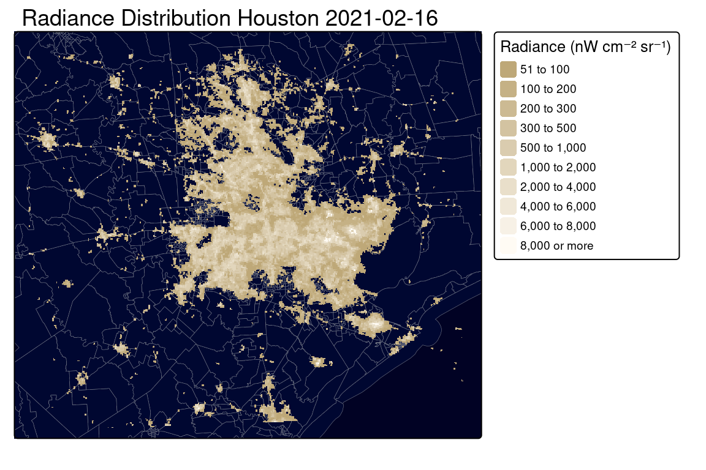
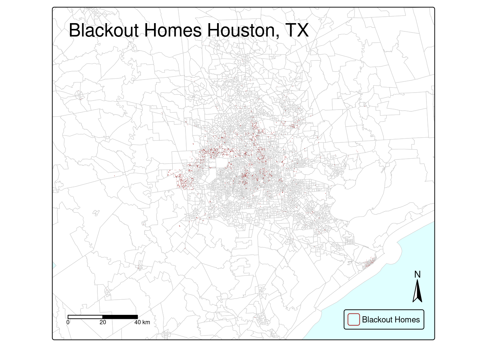
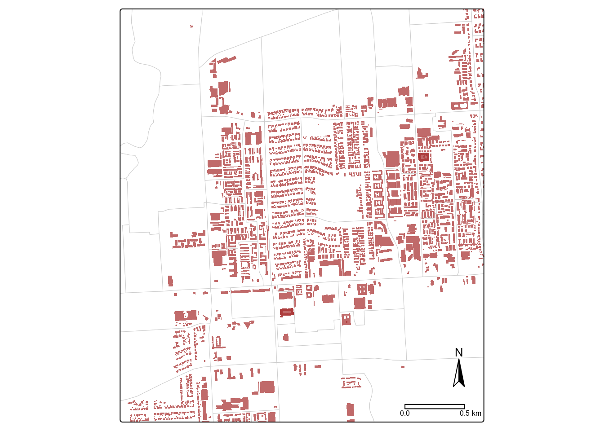

Code
library(tidyverse)
library(sf)
library(stars)
library(terra)
library(tmap)
library(dplyr)
library(kableExtra)
library(patchwork)Exploring patterns of environmental justice
library(tidyverse)
library(sf)
library(stars)
library(terra)
library(tmap)
library(dplyr)
library(kableExtra)
library(patchwork)# Use st_read to read in building data, save as variable building
building <- st_read(
here::here("data", "gis_osm_buildings_a_free_1.gpkg"),
query = "SELECT * FROM gis_osm_buildings_a_free_1
WHERE (type IS NULL AND name IS NULL)
OR type IN ('residential', 'apartments', 'house', 'static_caravan', 'detached')", quiet = TRUE)
# Use st_read to read in road data, save as variable roads
roads <-st_read(here::here("data", "gis_osm_roads_free_1.gpkg"), query = "SELECT * FROM gis_osm_roads_free_1 WHERE fclass='motorway'", quiet = TRUE)
# Use rast from the terra package to read in tile h08v05 date 02/07/21, save as variable tile_8_5_07
tile_8_5_07 <- read_stars(here::here("data", "VNP46A1", "VNP46A1.A2021038.h08v05.001.2021039064328.tif"), quiet = TRUE)
# Use rast from the terra package to read in tile h08v06 date 02/07/21, save as variable tile_8_6_07
tile_8_6_07 <- read_stars(here::here("data", "VNP46A1", "VNP46A1.A2021038.h08v06.001.2021039064329.tif"), quiet = TRUE)
# Use rast from the terra package to read in tile h08v05 date 02/16/21, save as variable tile_8_5_16
tile_8_5_16 <- read_stars(here::here("data", "VNP46A1", "VNP46A1.A2021047.h08v05.001.2021048091106.tif"), quiet = TRUE)
# Use rast from the terra package to read in tile h08v06 date 02/16/21, save as variable tile_8_6_16
tile_8_6_16 <- read_stars(here::here("data", "VNP46A1", "VNP46A1.A2021047.h08v06.001.2021048091105.tif"), quiet = TRUE)
# Use st_read to read in income data
income <- st_read(here::here("data", "ACS_2019_5YR_TRACT_48_TEXAS.gdb"), layer = "X19_INCOME", quiet = TRUE)
# Use st_read to read in road data, save as variable
texas_cens <- st_read(here::here("data", "ACS_2019_5YR_TRACT_48_TEXAS.gdb"), layer = "ACS_2019_5YR_TRACT_48_TEXAS", quiet = TRUE)
# Read in ejscreen data for base-map
ejscreen <- st_read(here::here("data", "ejscreen", "EJSCREEN_2023_BG_StatePct_with_AS_CNMI_GU_VI.gdb"), quiet = TRUE)roads <- st_transform(roads, crs = 3083)
building <- st_transform(building, crs = 3083)
ejscreen <- st_transform(ejscreen, crs = 3083)
texas_cens <- st_transform(texas_cens, crs = 3083)# Check if all CRSes are the same
if (!all(st_crs(roads) == st_crs(building),
st_crs(building) == st_crs(ejscreen),
st_crs(ejscreen) == st_crs(texas_cens))) {
warning("Not all spatial objects have the same CRS.")
} else {
message("All spatial objects have the same CRS.")
}# Use filter to filter for counties around houstin, this is for my base-map
houston <- ejscreen %>%
filter((STATE_NAME == "Texas") & (CNTY_NAME %in% c("Harris County", "Liberty County", "Austin County", "Waller County", "Montgomery County", "Chambers County", "Fort Bend County", "Galveston County", "Brazoria County", "Washington County", "Grimes County", "Burleson County", "Brazos County", "San Jacinto County", "Austin County", "Colorado County", "Matagorda County", "Wharton County", "Jackson County", "Polk County", "Walker County", "Hardin County", "Jefferson County", "Tyler County")))(-96.5, 29), (-96.5, 30.5), (-94.5, 30.5), (-94.5, 29)
# Merge tiles to make one frame for each day, the 7th and the 16th
tile_merge_07 <- st_mosaic(tile_8_5_07, tile_8_6_07)
tile_merge_16 <- st_mosaic(tile_8_5_16, tile_8_6_16)
# Define the desired bounding box for Houston
houston_bbox <- st_bbox(c(xmin = -96.5, xmax = -94.5, ymin = 29, ymax = 30.5), crs = tile_merge_07)
# Use st_as_sf
houston_sf <- st_as_sfc(houston_bbox) %>%
st_transform(st_crs(tile_merge_07))
# Crop the raster using the bounding box
tile_merge_07 <- st_crop(tile_merge_07, houston_bbox)
tile_merge_16 <- st_crop(tile_merge_16, houston_bbox)
# make a copy of each and save them to new variables. I want to use the copy to make my first two maps. In order to see the base-map, I have to element some lower values, around 50 nW cm² sr⁻¹. If not, my base-map will be completely covered
tile_merge_07_copy <- tile_merge_07
tile_merge_16_copy <- tile_merge_16
# Set values less than 200 nW cm² sr⁻¹ to NA for mapping on top of ejscreen data. This excludes the backgroud from covering the ejscreen data, save as new variable. Note: I am not sure of the minimum light detected for the background. This number came from trial and error
tile_merge_07_copy[tile_merge_07_copy <= 50] <- NA
tile_merge_16_copy[tile_merge_16_copy <= 50] <- NA# Plot before the storm
hou_map_07 <- tm_shape(houston,
bbox = houston_bbox) +
tm_polygons(fill = "#000731",
col = "#707483",
lwd = .3) +
tm_shape(tile_merge_07_copy) +
tm_raster(palette = c("#bea878", "#fffbf4"),
breaks = c(51, 100, 200, 300, 500, 1000, 2000, 4000, 6000, 8000, Inf),
title = "Radiance (nW cm⁻² sr⁻¹)",
legend.show = TRUE,
legend.hist = TRUE) +
tm_layout(bg.color = "#010224",
legend.bg.color = "white",
legend.title.size = 0.8,
legend.text.size = 0.6,
legend.outside = TRUE,
legend.outside.position = "right", # Placing legend outside on the right
legend.orientation = "vertical",
legend.outside.size = 0.2) +
tm_title_out("Radiance Distribution Houston 2021-02-07",
position = c(0, 1),
size = 1.5,
color = "black",
fontface = "bold")
# Print map
print(hou_map_07)# Plot after the storm
hou_map_16 <-
tm_shape(houston,
bbox = houston_bbox) +
tm_polygons(fill = "#000731",
col = "#707483",
lwd = .3) +
tm_shape(tile_merge_16_copy) +
tm_raster(palette = c("#bea878", "#fffbf4"),
breaks = c(51, 100, 200, 300, 500, 1000, 2000, 4000, 6000, 8000, Inf),
title = "Radiance (nW cm⁻² sr⁻¹)",
legend.show = TRUE,
legend.hist = TRUE) +
tm_layout(bg.color = "#010224",
legend.bg.color = "white",
legend.title.size = 0.8,
legend.text.size = 0.6,
legend.outside = TRUE,
legend.outside.position = "right", # Placing legend outside on the right
legend.orientation = "vertical",
legend.outside.size = 0.2) +
tm_title_out("Radiance Distribution Houston 2021-02-16",
position = c(0, 1),
size = 1.5,
color = "black",
fontface = "bold")
# Print map
print(hou_map_16)
# Subtract tile day 16 from tile day 7 to created difference raster mask
diff_rast_mask <- (tile_merge_07 - tile_merge_16)# Assign NA to locations with a drop of less than 200 nW cm² sr⁻¹
diff_rast_mask[diff_rast_mask <= 200] <- NA
# Vectorize blackout mask with as.polygons and st_as_sf to make it vector data instead of raster
diff_poly_mask <- as.polygons(rast(diff_rast_mask)) %>%
st_as_sf() %>%
st_transform(crs = 3083)# Map the blackout data
blackout_map <- tm_shape(houston,
bbox = diff_rast_mask) +
tm_polygons(fill = "seashell1",
col = "grey80") +
tm_shape(diff_poly_mask) +
tm_polygons(fill = "brown",
alpha = .7,
border.col = NA) +
tm_layout(bg.color = "#E0FFFF",
legend.show = TRUE) +
tm_title(text = "Blackout Areas Houston, TX",
fontfamily = "fantasy",
fontface = "bold",
position = c("left", "top")) +
tm_scalebar(position = c("left", "bottom")) +
tm_add_legend(labels = "Blackout Areas",
type = "fill",
col = "brown",
bg.color = NA,
position = c("right", "bottom")) +
tm_compass(position = c(.92, .06))
# Print map
print(blackout_map)# Use st_buffer to make road buffer of 200m, unionize the buffer, transform to 3083 so it matches the mask, make all polygons valid, make simple feature
roads_200 <- st_buffer(roads, dist = 200) %>%
st_union() %>%
st_transform(crs = 3083) %>%
st_make_valid() %>%
st_as_sf()
# Use st_difference to eliminate roads from the mask
black_map_no_roads <- st_difference(diff_poly_mask, roads_200)
# Plot to check
map_no_roads <- tm_shape(black_map_no_roads) +
tm_polygons()
print(map_no_roads)# Use st_intersects to see which homes were affected by the black out
blkout_home <- st_intersects(black_map_no_roads, building)
# Unlist the list of homes and keep only unique values, this way no home is in multiple polygons. That probably would not be the case but I wanted to make sure. Unlist creates a list of index values from the building data frame
blkout_index <- blkout_home %>%
unlist() %>%
unique()
# use the index to filter only homes that experienced a blackout
affected_buildings <- building[blkout_index, ]
# Map the blackout data
blackout_homes <- tm_shape(houston,
bbox = houston_bbox) +
tm_polygons(fill = "white",
col = "grey80",
lwd = .5) +
tm_shape(affected_buildings) +
tm_polygons(fill = "brown",
alpha = 1,
border.col = NA) +
tm_layout(bg.color = "#E0FFFF",
legend.position = c("right", "bottom")) +
tm_title(text = "Blackout Homes Houston, TX",
fontfamily = "fantasy",
fontface = "bold",
position = c("left", "top"),
size =7,
bg.color = "white") +
tm_scalebar(position = c("left", "bottom")) +
tm_add_legend(labels = "Blackout Homes",
type = "fill",
col = "brown",
bg.color = NA) +
tm_compass(position = c(.90, .08))
print(blackout_homes)
# New shifted bounding box for a 2-mile area
zoomed_bbox <- st_bbox(c(xmin = -95.50725, xmax = -95.47825, ymin = 29.72825, ymax = 29.75725), crs = st_crs(tile_merge_07))
zoomed_map <- tm_shape(houston,
bbox = zoomed_bbox) +
tm_polygons(fill = "white",
col = "grey80",
lwd = .5) +
tm_shape(affected_buildings) +
tm_polygons(fill = "brown",
alpha = .7,
border.col = NA) +
tm_layout(bg.color = "#E0FFFF",
legend.position = c("right", "bottom")) +
tm_scalebar(position = c(.75, 0)) +
tm_compass(position = c(.9, .072))
# Print map
print(zoomed_map)
# Find total of homes affected
homes_total <- nrow(affected_buildings)
# Create a summary data frame
summary_table_data <- data.frame( Description = "Estimated Total Affected Homes", Total = homes_total)
summary_table <- summary_table_data %>%
kbl(col.names = c("Description", "Total"),
digits = 2) %>%
kable_styling(bootstrap_options = c("striped", "hover", "condensed"),
full_width = F)
summary_table| Description | Total |
|---|---|
| Estimated Total Affected Homes | 157409 |
median_income <- income %>%
select(GEOID, B19013e1)
# Join income with the geo layer
income_geo <- left_join(texas_cens, median_income, join_by(GEOID_Data == GEOID))
income_geo <- st_transform(income_geo, crs = 3083)census_blkout <- st_intersects(black_map_no_roads, income_geo)
census_index <- census_blkout %>%
unlist() %>%
unique()
tracts_affect <- income_geo[census_index,]
census_map <- tm_shape(houston,
bbox = houston_bbox) +
tm_polygons(fill = "white",
col = "grey80",
lwd = .5) +
tm_shape(tracts_affect) +
tm_polygons(fill = "B19013e1",
palette = c("lightyellow", "darkgreen"),
title = "Median Income") +
tm_title_out("Median Household Income In The Past 12 Months Of Census Blocks Affected",
position = c(0, 1),
size = 1.7,
color = "black",
fontface = "bold") +
tm_scalebar(position = c(.73, 0)) +
tm_compass(position = c(.90, .07))
census_map# plot with income of homes affected
home_inc_aff <- ggplot(tracts_affect,
aes(x = tracts_affect$B19013e1)) +
geom_histogram(fill = "cornflowerblue") +
labs(x = "Median Household Income of Census Tracts Affected", y = "Number of Houses")
# Find the number of homes tracts not affected
tracts_no_affect <- income_geo %>%
filter(!GEOID %in% tracts_affect$GEOID)
# plot with income of homes affected
home_inc_no_aff <- ggplot(tracts_no_affect,
aes(x = tracts_no_affect$B19013e1)) +
geom_histogram(fill = "cornflowerblue") +
labs(x = "Median Household Income of Census Tracts Not Affected", y = "Number of Houses")
# Plot with patchwork
home_inc_aff + home_inc_no_aff